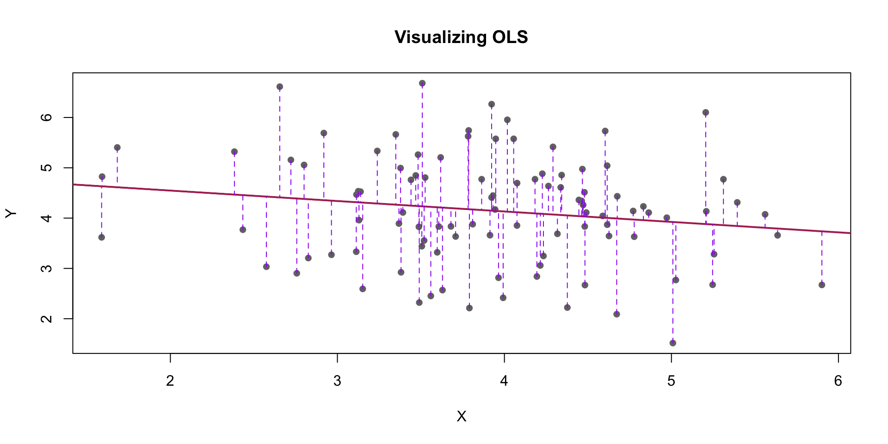

All normal distributions can be described by their mean and their standard deviation
This one is called “sampling distribution of the sample mean”
Centered around our estimate \(\hat{p}\)
\(SE = \sqrt{\frac{Var (Support)}{n}}\)
Knowing it is a normal distribution helps us quantify the uncertainty in our estimates
Standard Errors
The standard deviation of the sampling distribution of an estimator is called “standard error”
By calculating the standard error we can know the shape of the sampling distribution. This helps us do two important things:
Construct confidence intervals (what is the range within which the true value is likely to be?)
Do hypothesis testing (p-values and statistical significance)
Confidence Intervals
Range of values that likely includes the true value of our parameter of interest
The range that includes a pre-specified proportion of the density of the sampling distribution
Interpretation: “With X% confidence, the true parameter is within the confidence interval”
More specifically “If I drew millions of samples and constructed a confidence interval for each one, my true parameter would be inside the CI X% of the times”
Confidence Intervals
Because of the properties of the normal distribution, we know that 95% of the density will be within the following range:
# standard deviation of the sampling distribution computed with the formulase <-round(sqrt(var(brex$exit, na.rm = T)/nrow(brex)),3)# An analytic solution to the confidence interval(ci_95 <-c(phat - (1.96*se), phat + (1.96*se)))
[1] 0.4823528 0.4941128
Show code
# We can check that it's the same as the interval that leave 95% of the mass inside# of the sampling distribution quantile(out.means, c(.025, .975))
2.5% 97.5%
0.4824196 0.4939738
Linear Regression
We can think of the parameters of a linear regression in the same way.
Minimizing this objective yields the “ordinary least squares” (OLS) estimates of \(\alpha\) and \(\beta\)
Linear Regression: Simulation
# Simulated dataset.seed(8)# TRUE alpha and betaalpha <-5beta <--.216x <-rnorm(100, 4, .8) # error <-rnorm(100, 0, 1)# relationship is linear by construction because I'm simulation god!!y <- alpha + (beta*x) + error
Linear Regression: Simulation
Show code
# Fit linear modelmodel <-lm(y ~ x)# Predict $y_hat$ or the expected y given the model and xy_pred <-predict(model)# Plot the dataplot(x, y, main="Visualizing OLS", xlab="X", ylab="Y", pch=16, col="gray45")# Add best fit lineabline(model, col="maroon", lwd=2)# Draw vertical lines showing each prediction errorsegments(x, y, x, y_pred, col="purple", lty=2)

Linear Regression: Interpretation
Why are \(\hat{\beta}\) and \(\hat{\alpha}\) different from \(\alpha\) and \(\beta\)?
Call:
lm(formula = y ~ x)
Residuals:
Min 1Q Median 3Q Max
-2.4061 -0.8055 0.1533 0.6918 2.4457
Coefficients:
Estimate Std. Error t value Pr(>|t|)
(Intercept) 4.9658 0.5027 9.879 <2e-16 ***
x -0.2082 0.1251 -1.664 0.0993 .
---
Signif. codes: 0 '***' 0.001 '**' 0.01 '*' 0.05 '.' 0.1 ' ' 1
Residual standard error: 1.074 on 98 degrees of freedom
Multiple R-squared: 0.02748, Adjusted R-squared: 0.01755
F-statistic: 2.769 on 1 and 98 DF, p-value: 0.09932
x
-0.2081563
[1] 0.1250993
Linear Regression
Estimates of \(\hat{\beta}\) and \(\hat{\alpha}\) have uncertainty
They have their own sampling distributions!
CLT: They are also normal
We can use what I know about normal distributions to quantify their uncertainty
We can construct confidence intervals in the exact same way!
Or do hypothesis tests
Hypothesis Testing and P-values
We are often interested in determining whether the true parameter is different from zero with a pre-specified level of confidence